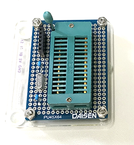
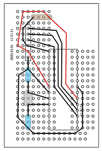
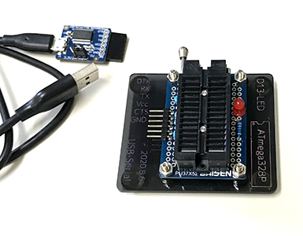
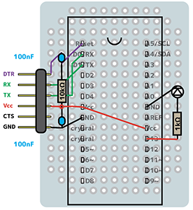

Using an ATmega328P standalone.
2020.7.9, 2020.8.5, 2020.8.6, 2020.11.19, 2021.9.29
Preparation
- Arduino Uno
- Bootloader writer (a 16 MHz crystal, a 10k resistor, and two 18 to 22 picofarad (ceramic) capacitors, a zero-pressure 28-pin socket)
- USB-serial converter and USB cable
- Sketch writer with USB-serial converter (a zero-pressure 28-pin socket, 100 nF capacitors, LED and 1k resistor)
- Jumper wires
- Computer
 
Bootloader writer and its circuit
 
USB-serial converter and Sketch writer
Don't forget ! 1
Install a driver for USB-serial converter. ドライバをインストールしておきます。
- Go to ftdichip.com, Drivers
- Move downloaded app "FTDI USB Serual Dext VCP" into "Applications" folder.
- Open it. If it doesn't open, restart the computer. (2022.2 M1 Mac)
- Approve to open the app at "System Preference/Security and Privacy".
- Push bottun "Install FTDI USB Serial Dext VCP".
- Install will be succeeded shortly.
(2021.9.29 I installed v1.4.7, which was released in 2021-5-18 into MBP15 macOS11.) (2022.2. 17 I installed v1.4.7, which was released in 2021-5-18 into MBP16 M1 Max macOS12. Restart was needed before openning of installer.)
Don't forget ! 2
Add hardware information. ハードウェア情報をArduinoIDEアプリに追加しておきます。
- Go to Arduino site.
- You will file a file name "breadboard-1-6-x.zip" around the middle of the page.
- Create the new folder "Hardware" at /(Documents)/Arduino/
- Put downloaded file (a folder namely "breadboard") at /(Documents)/Arduino/Hardware/
- Restart Arduino IDE, you will see "ATmega328 on a breadboard (8 MHz internal clock)" in the Tools > Board menu.
Procedure
1. Make Arduino Uno as Arduino ISP (in-system programmer)
- Open the sketch
File>Examples>11. ArduinoISP> AruduinoISP - Connect Arduino Uno with PC using USB cable.
-
Upload the sketch to Aruduino Uno with the settings as usual;
Tools>Board: Arduino UnoTools>Port: /dev/cu.usbserial-....Tools>Programmer: AVRISPmkII
-
Press
Uploadbutton, then you will findDone Uploading.
2. Burn bootloader on ATmega328P using Arduino ISP
-
Connect Arduino Uno (D10-13, 5V, GND) to an ATmega328P on the bootloader writer.
Tools>Board>breadboard AVR (in sketchbook) boards: ATmega328 on a breadboard (8 MHz internal clock)Tools>Port: /dev/cu.usbserial-....Tools>Programmer: Arduino as ISP
-
Tools>Burn bootloader.You will find
...may take minutes...thenDone burning bootloader -
Messages may appear as "***failed; avrdude: WARNING...efuse...0xfd...", but it seems NO problem. Successfull burning can be confirmed by twinkling LED "L" on Arduino Uno board just after the burning, or "D13" on the sketch writer in the next step.
-
Remove ATmega328P from the bootloader writer.
3. Upload a sketch to ATmega328P via USB-serial converter.
- Connect the sketch writer circuit to PC via USB-serial converter.
- Put ATmega328P onto the sketch writer.
- Open the sketch to be uploaded.
-
Upload with the settings below;
Tools>Board>Arduino AVR boards: Arduino Pro or Pro miniTools>Processor: ATmega328P(3.3V, 8MHz)Tools>Port: /dev/cu.usbserial-....Tools>Programmer: (AVRISPmkII or Arduino as ISP)
-
Push
Uploadbutton, then you will seeDone Uploading.Messaage may appear as "Warning: Board...328BB" in orange, "Sketck uses...", and "Global variables..." in white. These seem to be NO problem.
Memo
Reference
-
Official:
-
Japanease:
Voltechno.com/壊れたArduinoを修理！ブートローダーの書き換えで修理する方法, 2018-2021
-
There is a plenty of information on the web. An article on the new Arduino IDE 1.8.x would be better. The official page has instructions for 1.0.x and for the others (1.6, 1.8).
-
ネット上には情報はたくさんあります。新しいArduino IDE 1.8.x(2021時点)の記事がよいと思います。公式ページには、1.0.x用の方法と、それ以外(1.6, 1.8)用の方法が記載されています。
Bootloader
- Uno works well, but Leonardo did not.
- The official site also mentions Arduino Duemilanove or Nano w/ ATmega328, but it didn't work. ATmega328 on a breadboard (8 MHz internal clock) did work, although it is described as "without crystal oscillator". I don't know what it is, but it works. Download the board information in advance, and create a Hardware folder in the Arduino folder to store it.
-
If the Bootloader is successful, when you put the ATmega on the sketch writer in the next step, the LED on D13 will blink. Bootloader seems to be designed to do so.
-
Unoでうまくいった。Leonardoはダメだった。
- 公式サイトには、Arduino Duemilanove or Nano w/ ATmega328の記載もあるが、うまくいかなかった。うまくいくのは、ATmega328 on a breadboard (8 MHz internal clock)で、これは、「水晶発振子を使わない場合」とあり、よくわからないが、これでいいや。前もって、board情報をダウンロードし、ArduinoフォルダにHardwareフォルダをつくって格納しておくやつ。
- Bootloaderがうまく行けば、次のスケッチライターに載せたとき、D13のLEDが点滅する。そういう仕様らしい。ブートローダー＋Arduinoのときでも、Aruduino上のLED「L」が点滅する。
- エラーが出たけど、Done burning bootloaderとでる。D13が点滅するから、うまくいってそう。エラーは、***Failed...use 0xfd...3行。(2022.7.29 MBP16, v1.8.19)
Sketch writer
-
There is anothor way using USB-serial convert function on Arduino Uno board. However, ATmega328P chip on Arduino needs to be removed to use such function. Since I'm not confident that I can repeat the removal and insertion without damaging the ATmega pins, I bought USB-serial converter from Switch Science. Installation of a driver (FTDI) is needed before use.
-
公式サイトには「Arduino UnoボードのUSB-シリアル変換機能」を利用する方法が紹介されています。しかし、この機能を使うためには、ArduinoのATmega328Pチップを取り外す必要があるそうです（種々のネット情報では、外さずにスケッチ書き込みまでやる記載もあるけれど）。私は、ATmegaのピンを傷つけずに抜き差しを繰り返す自信がないので、スイッチサイエンスの「USB-serial converter」を購入しました。使用するにはドライバ（FTDI社）のインストールが必要です。